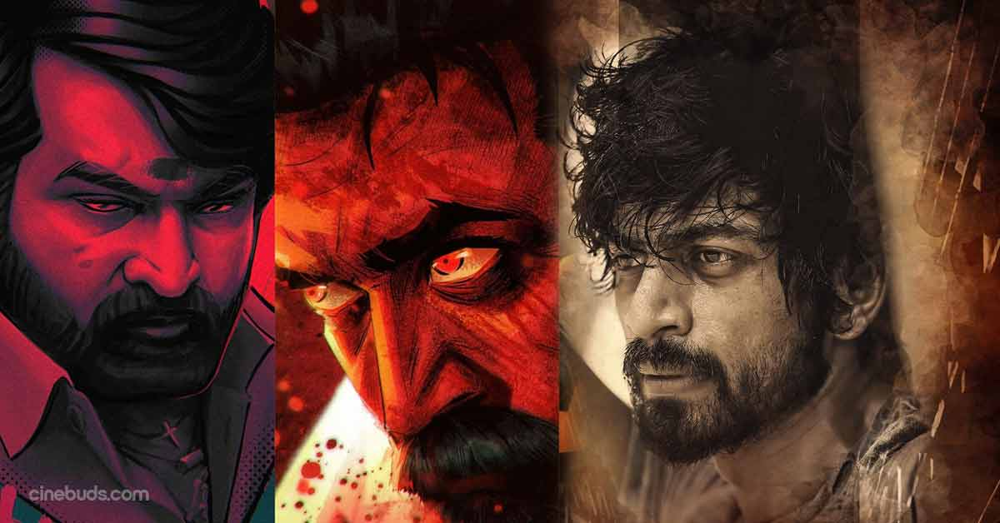

WELCOME TO VILLAIN'S WORLD

ROLEX
Rolex wasn’t born into power—he carved his empire from blood, betrayal, and fear.
Raised in the slums where life was cheaper than a blade, he rose like a virus—deadly, silent,
and unstoppable. While others built gangs, Rolex built a syndicate—a global drug and arms empire stretching
from Chennai to Colombia. He doesn’t just deal in poison—he manufactures it, controls it,
and uses it to break nations. Cold-blooded and brilliant, he believes fear is the only truth.
But when agents like Vikram and rebels like Dilli and Leo threaten his rule, he doesn’t run—he evolves.
Rolex doesn’t want to kill them… he wants to watch them crumble. His goal is not just business, it’s domination through addiction, chaos as control.
And even if his body falls, his shadow lives on through new monsters, bred in his labs and raised in his madness.
SANDHANAM
Sandhanam wasn’t just a drug lord—he was a spiritual terrorist who believed that violence was a divine path
to evolution. Born into a powerful family, he twisted ancient beliefs to justify bloodshed, calling his
drug business a “sacred ritual to cleanse the world.” With over 200 family members as his personal army
and a secret bunker fortress buried beneath Chennai, Sandhanam ran the south Indian drug circuit like a cult.
To him, pain is holy, death is purification, and only the ruthless deserve to live. But when Vikram and his men
destroyed his empire, Sandhanam didn’t die… he ascended. Rumors say he survived the explosion, his body burnt
but his will stronger than ever. Now hiding in the shadows, he prepares for a second coming—not for power, but for revenge disguised as resurrection.
Sandhanam doesn’t want to rule the world—he wants to cleanse it, his way.
ARJUN DASS
You’ve never seen him… but the underworld whispers his name like a curse. Arjun Dass –
the man who built the southern drug trade with blood and betrayal. Unlike Rolex who loves chaos,
\Arjun is calm, calculated, and dangerously patient. He doesn’t shout. He commands with silence.
He was the strategist behind every cartel movement, the one who trained men like Anbu and Adaikalam,
and the one who vanished before the police could even get his shadow. When Rolex calls him in Kaithi,
it’s not just to warn—it’s a call to unleash the sleeping devil. Arjun Dass doesn’t crave power anymore
—he wants revenge. His empire was attacked, his people were slaughtered, and now… he’s coming back not just to rebuild it,
but to bury everyone who dared touch it. He is the man in the dark,
and when he rises… even the ghosts hide.
To Enter the World of VILLAIN'S
Click here to Enter